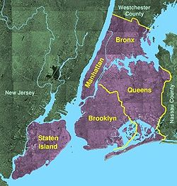
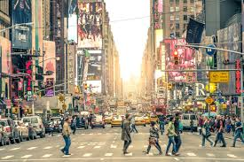

The geography of New York City is characterized by its coastal position at the meeting of the Hudson River and the Atlantic Ocean in a naturally sheltered harbor. The city's geography, with its scarce availability of land, is a contributing factor in making it one of the most densely populated cities in the United States. Environmental issues are chiefly concerned with managing this density, which also explains why New York is among the most energy efficient and least automobile-dependent cities in the United States. The city's climate is temperate.
New York City is located on the coast of the Northeastern United States at the mouth of the Hudson River in southeastern New York state. It is located in the New York–New Jersey Harbor Estuary, the centerpiece of which is the New York Harbor, whose deep waters and sheltered bays helped the city grow in significance as a trading city. Much of New York is built on the three islands of Manhattan, Staten Island, and western Long Island, making land scarce and encouraging a high population densit.
The Hudson River flows from the Hudson Valley into New York Bay, becoming a tidal estuary that separates the Bronx and Manhattan from Northern New Jersey. The Harlem River, another tidal strait between the East and Hudson Rivers, separates Manhattan from the Bronx.
The boroughs of New York City straddle the border between two geologic provinces of eastern North America. Brooklyn and Queens, located on Long Island, are part of the eastern coastal plain. Long Island is a massive moraine which formed at the southern fringe of the Laurentide Ice Sheet during the last Ice Age. The Bronx and Manhattan lie on the eastern edge of the Newark Basin, a block of the Earth's crust which sank downward during the disintegration of the supercontinent Pangaea during the Triassic period. The Palisades Sill on the New Jersey shore of the Hudson River exposes ancient, once-molten rock that filled the basin. Tough metamorphic rocks underlie much of Manhattan, providing solid support for its many skyscrapers.
The city's land has been altered considerably by human intervention, with substantial land reclamation along the waterfronts since Dutch colonial times. Reclamation is most notable in Lower Manhattan with modern developments like Battery Park City. Much of the natural variations in topography have been evened out, particularly in Manhattan.[1] The West Side of Manhattan retains some hilliness, especially in Upper Manhattan, while the East Side has been considerably flattened. Duffy's Hill in East Harlem is one notable exception to the East Side's relatively level grade.
The city's land area is estimated to be 321 square miles (830 km2).[2] However, a more recent estimate calculates a total land area of 304.8 square miles (789.4 square kilometres).[3] The highest natural point in the city is Todt Hill on Staten Island, which at 409.8 ft (124.9 m) above sea level is the highest hill on the Eastern Seaboard south of Maine. The summit of the ridge is largely covered in woodlands as part of the Staten Island Greenbelt.